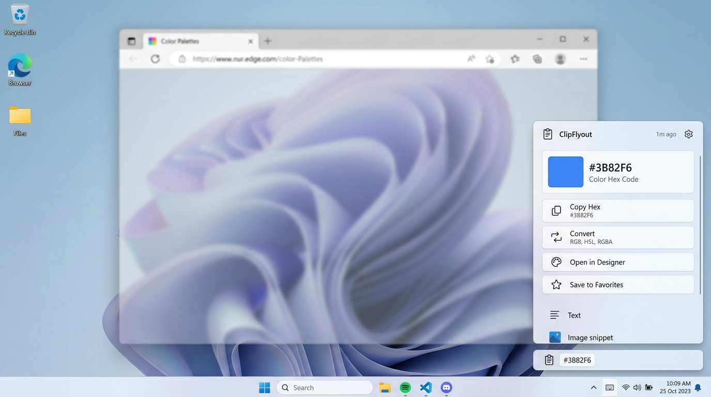

ダウンロード & 配布
コピーした内容に応じて最適な整形や変換アクションを画面端のすりガラスフライアウトで提案。
作業フォーカスを奪わず、タイピングやブラウジングを中断することなく1クリックで実行できます。
※ Windows 11 / 10 (x64) 対応。管理者権限不要でインストール可能です。
デスクトップ プレビュー

Windows 11 DWM トランジェントアクリルによる本物のすりガラス背景と、タスクバー直結ウィジェット
主な機能と特徴
本物のアクリル効果
Windows 11 DWM（デスクトップウィンドウマネージャー）のトランジェントアクリルを採用。なめらかなすりガラス背景とダーク/ライトテーマ自動追従に対応しています。
タスクバー直結ウィジェット
直近のコピー内容をタスクバー近傍にシームレス表示。枠線のない自然なデザインで、クリックするだけでいつでもフライアウトを呼び出せます。位置調整スライダー付き。
1クリック即時アクション
カラーコード、UNIX時間、JSON、URL等を自動判別。変換アクション実行後は、次のフライアウトに「ペースト」ボタンが自動提示され作業が滞りません。
100% ローカル & プライバシー保護
データは完全ローカル処理。1PasswordやBitwarden、KeePassなどのパスワード管理ツールからのコピーは自動検知して除外するため安全です。
初回セットアップウィザード
初回起動時に親しみやすいウェルカム画面が表示され、「既定値で使用する」をクリックするだけで最適な初期設定ですぐに使い始められます。
洗練された設定画面
PowerToys スタイルのアイコンプレート付きカードUI。フライアウトの位置・透明度・アクセントカラーのカスタマイズやインライン更新確認に対応。
対応データ型とアクション一覧
クリップボードの内容を自動判別し、文脈に応じた適切な操作をワンクリックで提供します：
| データ型 | 検出条件 | 提供される主なアクション |
|---|---|---|
| 🎨 HEX カラー | #RGB, #RRGGBB, #AARRGGBB |
色見本プレビュー、RGB / HSL / RGBA 変換コピー |
| ⏱️ Unix タイムスタンプ | 10桁 (秒) / 13桁 (ミリ秒) 数値 | ローカル日時、UTC ISO 8601 変換、現在Epochコピー |
| 📦 JSON テキスト | {...} または [...] |
インデント整形コピー、1行化 (Minify) コピー |
| 🌐 Web URL | http:// または https:// |
既定ブラウザで開く、QRコード画像生成、ドメインコピー |
| 🧹 クリーンURL | UTMトラッカーや fbclid を含むURL |
追跡パラメータを除去したクリーンURLのコピー |
| ✉️ メールアドレス | メール形式文字列 | 既定メールアプリ起動、ドメインコピー、ユーザー名コピー |
| 🔒 Base64 / Data URI | Base64エンコード文字列 | プレーンテキストへの復号、画像データとしての直接展開 |
| 📊 表データ (CSV/TSV) | Excel/スプレッドシートの区切りテキスト | Markdownテーブル表への整形、JSON配列への変換 |
| 💻 コードスニペット | プログラム構文・インデント | インデント正規化 (スペース2文字)、HTML文字エスケープ |
| 🔤 識別子ケース変換 | camelCase, snake_case, PascalCase, kebab-case | 各命名規則間の相互変換コピー |
| 🔑 JWT トークン | JWT 署名付きトークン | クレームペイロード (JSON) のデコード展開 |
| 🖼️ クリップボード画像 | スクリーンショットやコピー画像 | 解像度・縦横比情報の確認、PNGファイルとして直接保存 |
| 📝 プレーンテキスト | 一般的な文字列 | 空白トリム、文字数/単語数/行数カウント、大文字/小文字化 |
使い方とショートカット
-
1
アプリの常駐
起動するとタスクトレイ（通知領域）にClipFlyoutアイコンが表示され、自動的にクリップボードの監視が始まります。 -
2
コピーするだけ (Ctrl + C)
ブラウザやテキストエディタ等でコピーを行うと、画面端に非アクティブ（フォーカスを奪わない）すりガラスフライアウトが表示されます。 -
3
リコールショートカット (Alt + Shift + C)
フライアウトが消えた後でも、いつでも直前のフライアウトを再表示できます。 -
4
タスクバーウィジェットの活用
タスクバー上に表示されている小さなウィジェットをクリックすると直前のコピー内容が展開されます。右クリックで位置変更メニューが開きます。
動作環境 & ライセンス
システム要件
- 対応OS: Windows 11 / Windows 10 (x64)
- ランタイム: .NET 9.0 Desktop Runtime
- 透明効果: Windowsの「透明効果」が有効であること（アクリル効果に推奨）
ライセンス
GNU General Public License v3 (GPL-3.0)
本ソフトウェアはオープンソースの自由ソフトウェアです。どなたでも無償で自由に使用、研究、改変、再配布できます。